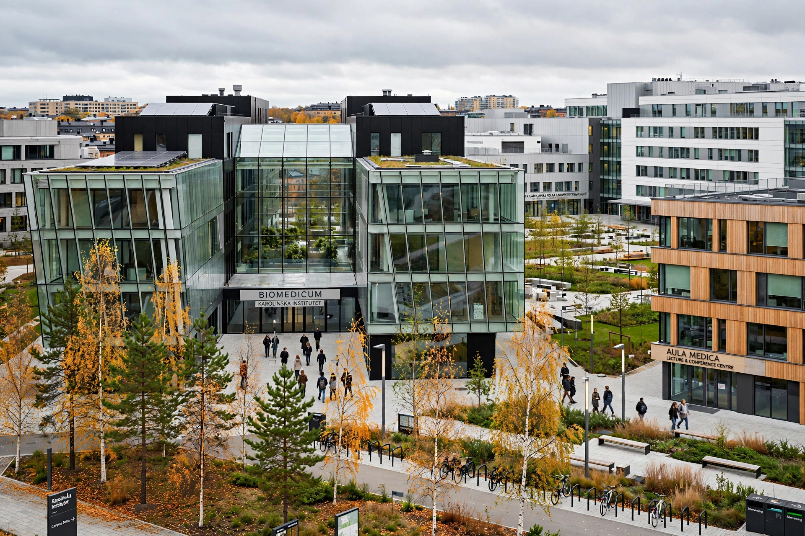

| Karolinska Institute | |
|---|---|
| Native name | Karolinska Institutet |
| Founded | 1810, by King Charles XIII |
| Type | Public medical university |
| Location | Solna (and Huddinge), Stockholm, Sweden |
| Students | ~6,500 full-time (plus ~2,300 doctoral students) |
| Motto | Att förbättra människors hälsa ("To improve human health") |

The Karolinska Institute (Swedish: Karolinska Institutet; sometimes known as the Karolinska Institute of Medicine) is a research-led medical university in Solna within the Stockholm urban area of Sweden. Founded in 1810, it is one of the world's foremost medical universities and accounts for the single largest share of academic medical research in Sweden. Its Nobel Assembly selects the laureates for the Nobel Prize in Physiology or Medicine.
The institute was founded in 1810 by King Charles XIII to train army surgeons, after Sweden's poor medical performance in the Finnish War. It was named after the "Karoliner", the soldiers of kings Charles XI and XII. The chemist Jöns Jacob Berzelius was an early professor. From 1901 the institute's professors took on the task, set out in Alfred Nobel's will, of awarding the Nobel Prize in Physiology or Medicine; the 50-member Nobel Assembly at the Karolinska Institute now performs this role.
Karolinska offers Sweden's broadest range of medical education, including medicine, dentistry, nursing, psychology and toxicology, and is closely linked to the Karolinska University Hospital. It consistently ranks among the top medical schools in the world. The institute was at the centre of the Paolo Macchiarini scandal of the 2010s, in which a visiting professor's experimental synthetic-trachea transplants led to patient deaths, investigations and major reforms of research-ethics oversight.